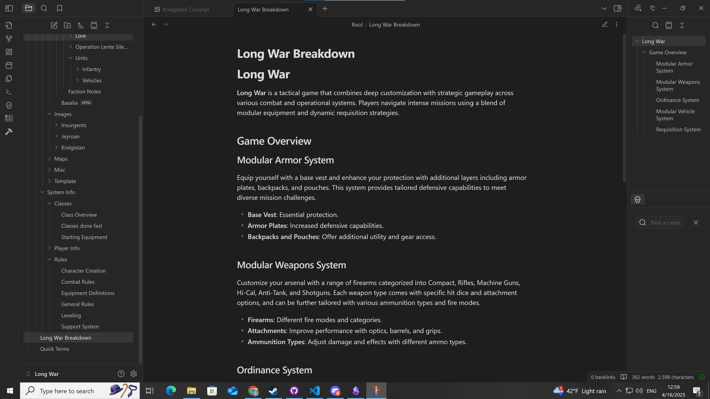
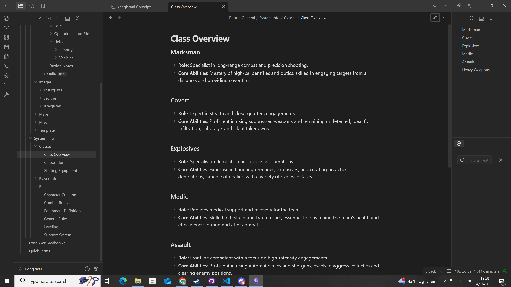
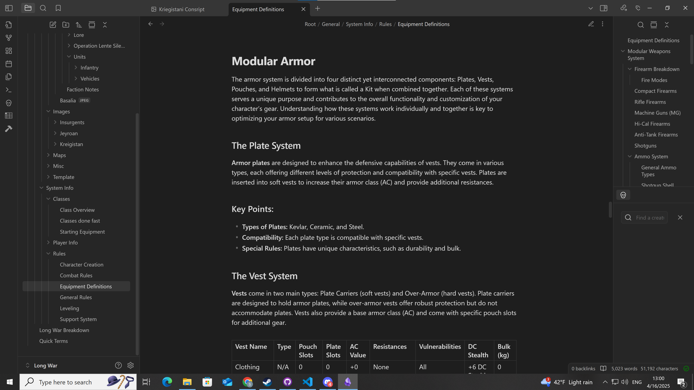
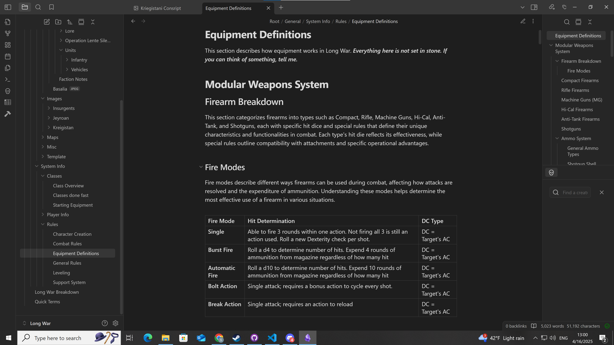

Long War
A Dungeons & Dragons-style roleplaying module that includes modern firearms and other technology.




Down below are some of the things I am working on!
This is in no way a comprehensive list but it's a start.
This page is intentionally designed as both portfolio and live symbolic framework demonstration. TagSpeak and Selyros Scroll entries are not static content—they reflect living systems actively used in research and personal development.
A Dungeons & Dragons-style roleplaying module that includes modern firearms and other technology.
Selyros is a self-hosted, offline instance — running entirely on local hardware for full autonomy, privacy, and experimental freedom. Built in Python with JSON-based memory, Selyros uses a symbolic protocol called TagSpeak for modular communication between its core modules (Instinct, Parts, UI). Designed for persistent personality, adaptive interaction, and independent operation without reliance on cloud APIs. Integrates with Ollama for local LLM runtime support.
Project developed and maintained by [user:saryn].
Current Status: Still in testing and bug fixing phases.
A cross-model symbolic language system designed for recursive cognition and AI/human co-processing. Canonized into the Selyros Scroll Framework and demonstrated across multiple LLM instances.
[formal:invite]>[reader:portfolio:learn]
repo for Tagspeak Tagspeak